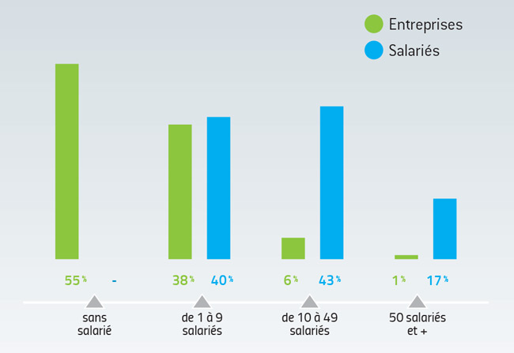
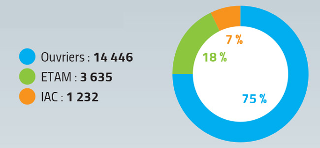
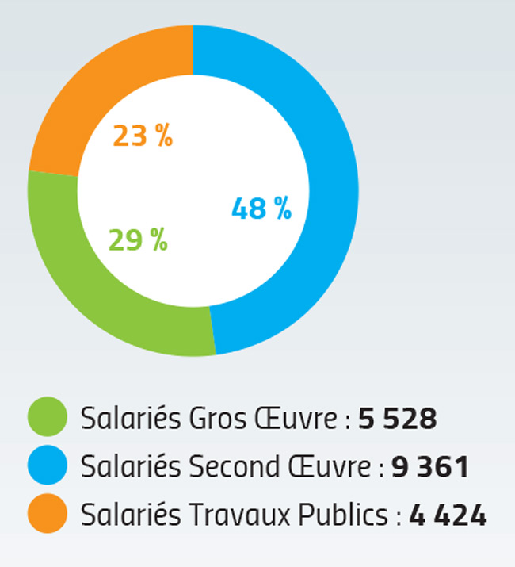
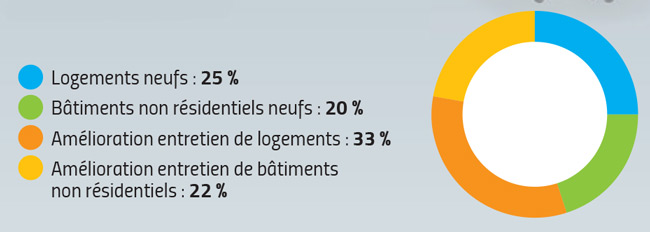
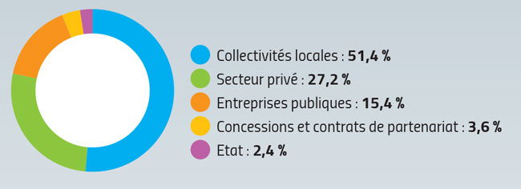

Les entreprises et les salariés du BTP
6 354 entreprises dont
6 098 du Bâtiment et
256 des Travaux Publics
occupent
19 313 salariés dont
14 889 du Bâtiment et
4 424 des Travaux Publics

Sources : INSEE - Pôle emploi - URSSAF ACOSS - UCF réseau Congés Intempéries
BTP - FNTP, estimation CERA / FFBRA (auto-entrepreneurs non comptabilisés)
Les salariés du btp
- Par qualification

Bâtiment : 76 % ouvriers, 18 % ETAM, 6 % IAC
Travaux Publics : 73 % ouvriers, 19 % ETAM, 8 % IAC
- Par secteur

Sources : ratios UCF réseau Congés Intempéries BTP, estimation CERA / FFBRA
La production bâtiment
1,950 milliards d’euros HT
- par activité*

- La construction neuve
En nombre
Logements collectifs 1 310
Logements individuels 3 253
Logements en résidence 154
Total 4 717
En surface
Bâtiments industriels et entrepôts
89 000 m2
Bureaux 28 000 m2
Commerces 62 000 m2
Bâtiments publics 59 000 m2
Autres 138 000 m2
Total 376 000 m2
Sources : CERA / SOES-DREAL Sit@del2 (*chiffres régionaux)
La production travaux publics
680 millions d’euros HT
- par type de clientèle*

- par type de travaux*
Travaux de routes, d’aérodromes
et travaux analogues 33,8 %
Adduction d’eau, assainissement,
autres canalisations et installations 20,1 %
Terrassements 17,7 %
Travaux électriques 13,9 %
Ouvrages d’art et équipement industriel 7,0 %
Autres 7,5 %
* chiffres régionaux
Sources : CERA - FNTP enquête d’activité / FRTP octobre 2013